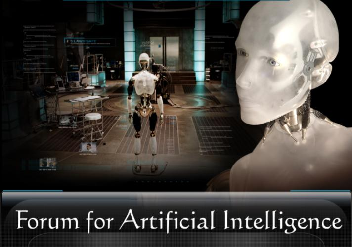

|
The Forum for Artificial Intelligence meets every other week (or so) to discuss scientific, philosophical, and cultural issues in artificial intelligence. Both technical research topics and broader inter-disciplinary aspects of AI are covered, and all are welcome to attend! If you would like to be added to the FAI mailing list, or have any questions or comments, please send email to Nick Jong, Lily Mihalkova, or Dan Tecuci . |
| Wednesday, March 7 11:00am, ACES 2.402 |
Mark Steedman University of Edinburgh |
The Computational Problem of Natural Language Acquisition |
| Friday, March 9 11:00am, ACES 6.304 |
Hermann Helbig University of Hagen, Germany |
Multilayered Extended Semantic Networks as a Knowledge Representation Paradigm and Interlingua for Meaning Representation |
| Friday, March 30 2:00pm, ACES 2.402 |
Renata Vieira Department of Informatics UNISINOS Sao Leopoldo, Brazil |
Title TBA |
| Monday, April 23 11:00am, ACES 2.302 (Avaya) |
Nicholas Roy Massachusetts Institute of Technology |
Title TBA |
Wednesday, March 7, 11:00am
|
The Computational Problem of Natural Language AcquisitionDr. Mark Steedman [homepage]
[Sign-up schedule for individual meetings]The talk reviews work-in-progress on language acquisition in children and robots using combinatory categorial grammar (CCG), building on work by Siskind, Villavicencio, and Zettlemoyer, among others. CCG is a theory of grammar in which all language-specific grammatical information resides in the lexicon. A small universal set of strictly type-driven, non-structure dependent, syntactic rules (based on Curry's combinators B, S, and T) then "projects" lexical items into sentence-meaning pairs. The task that faces the child in the earliest stages of language acquisition can therefore be seen as learning a lexicon on the basis of exposure to (probably ambiguous, possibly somewhat noisy) sentence-meaning pairs, given this universal combinatory "projection principle", and a mapping from semantic types to the set of all universally available lexical syntactic types. The talk argues that a very simple statistical model allows children to arrive at a target lexicon without navigation of subset principles, or attention to any attendant notion of trigger other than the notion "reasonably short sentence in a reasonably understandable situation". The model explains the pattern of errors that have been found in elicitation experiments. The linguistic notion of "parameter" appears to be redundant to this process. The talk goes on to consider some more general implications of the theory, including its application to the phenomenon of "syntactic bootstrapping," touching on the question of the prelinguistic origin of the combinatory projection principle itself. About the speaker:Mark Steedman is Professor in the School of Informatics at the University of Edinburgh. He received his PhD from the University of Edinburgh in 1973. He came to Edinburgh in 1998 from the University of Pennsylvania, where he was Professor in the Department of Computer and Information Science. He is a Fellow of the American Association for Artificial Intelligence, a Fellow of the Royal Society of Edinburgh, and a Fellow of the British Academy. His research interests cover issues in computational linguistics, artificial intelligence, computer science, and cognitive science, and their applications in practical systems, including syntax and semantics of natural language, wide-coverage parsing, comprehension of natural language by humans and by machine, and the role of intonation in spoken language generation and analysis. Some of his research concerns the analysis of music by humans and machines. He has acted as advisor for twenty-four PhDs. |
Friday, March 9, 11:00am
|
Multilayered Extended Semantic Networks as a Knowledge Representation Paradigm and Interlingua for Meaning RepresentationDr. Hermann Helbig [homepage]
[Sign-up schedule for individual meetings]The talk gives an overview of Multilayered Extended Semantic Networks (abbreviated MultiNet), which is one of the most comprehensively described knowledge representation paradigms used as a semantic interlingua in large-scale NLP applications and for linguistic investigations into the semantics and pragmatics of natural language. As with other semantic networks, concepts are represented in MultiNet by nodes, and relations between concepts are represented as arcs between these nodes. Additionally to that, every node is classified according to a predefined conceptual ontology forming a hierarchy of sorts, and the nodes are embedded in a multidimensional space of layer attributes and their values. MultiNet provides a set of about 150 standardized relations and functions which are described in a very concise way including an axiomatic apparatus, where the axioms are classified according to predefined types. The representational means of MultiNet claim to fulfill the criteria of universality, homogeneity, and cognitive adequacy. In the talk, it is also shown, how MultiNet can be used for the semantic representation of different semantic phenomena. To overcome the quantitative barrier in building large knowledge bases and semantically oriented computational lexica, MultiNet is associated with a set of tools including a semantic interpreter NatLink for automatically translating natural language expressions into MultiNet networks, a workbench LIA for the computer lexicographer, and a workbench MWR for the knowledge engineer for managing and graphically manipulating semantic networks. The applications of MultiNet as a semantic interlingua range from natural language interfaces to the Internet and to dedicated databases, over question-answering systems, to systems for automatic knowledge acquisition. About the speaker:Hermann Helbig is Professor at the University of Hagen, Germany, and head of the chair Intelligent Information and Communication Systems. He received his Dr.rer.nat. (PhD) in 1976 in Automatic Symbolic Formula Manipulation and his Dr.rer.nat.habil. (Habilitation) in 1986 in Knowledge Representation. His experiences in AI research cover a period of more than 30 years. His main contributions lie in the fields of question answering (question answering system FAS-80), natural language interfaces to data bases (NLI-AIDOS), word-class controlled functional analysis (WCFA), knowledge representation (MultiNet paradigm), and computational lexicography (semantically based computational lexicon HaGenLex). He is author of several monographs in AI, his last book relevant to the talk is "Knowledge Representation and the Semantics of Natural Language". His research interests cover issues in Natural Language Processing, Computational Lexicography, Knowledge Representation and Management, Semantics of NL, and Electronic Distance Teaching in AI. |
Friday, March 30, 2:00pm
|
Title TBADr. Renata Vieira [homepage]
Abstract TBA About the speaker:Bio TBA |
Monday, April 23, 11:00am
|
Title TBADr. Nicholas Roy [homepage]
Abstract TBA About the speaker:Bio TBA |
Thursday, July 13, 1:00pm
|
A Framework for Learning to Query Heterogeneous DataDr. William W. Cohen [homepage]
[Sign-up schedule for individual meetings]A long-term goal of research on data integration is to develop data models and query languages that make it easy to answer structured queries using heterogeneous data. In this talk, I will describe a very simple query language, based on typed similarity queries, which are answered based on a graph containing a heterogeneous mixture of textual and non-textual objects. The similarity metric proposed is based on a lazy graph walk, which can be approximated efficiently using methods related to particle filtering. Machine learning techniques can be used to improve this metric for specific tasks, often leading to performance far better than plausible task-specific baseline methods. We experimentally evaluate several classes of similarity queries from the domains of analysis of biomedical text and personal information management: for instance, in one set of experiments, a user's personal information is represented as a graph containing messages, calendar information, social network information, and a timeline, and similarity search is used to find people likely to attend a meeting. This is joint work with Einat Minkov and Andrew Ng. About the speaker:William Cohen received his bachelor's degree in Computer Science from Duke University in 1984, and a PhD in Computer Science from Rutgers University in 1990. From 1990 to 2000 Dr. Cohen worked at AT&T Bell Labs and later AT&T Labs-Research, and from April 2000 to May 2002 Dr. Cohen worked at Whizbang Labs, a company specializing in extracting information from the web. Dr. Cohen is member of the board of the International Machine Learning Society, and has served as an action editor for the Journal of Machine Learning Research, the journal Machine Learning and the Journal of Artificial Intelligence Research. He co-organized the 1994 International Machine Learning Conference, is the co-Program Committee Chair for the 2006 International Machine Learning Conference, and has served on more than 20 program committees or advisory committees. Dr. Cohen's research interests include information integration and machine learning, particularly information extraction, text categorization and learning from large datasets. He holds seven patents related to learning, discovery, information retrieval, and data integration, and is the author of more than 100 publications. |
Friday, Aug. 25, 11:00am
|
Building Reliable Metaclassifiers for Text LearningDr. Paul Bennett [homepage]
[Sign-up schedule for individual meetings]Appropriately combining information sources is a broad topic that has been researched in many forms. It includes sensor fusion, distributed data-mining, regression combination, classifier combination, and even the basic classification problem. After all, the hypothesis a classifier emits is just a specification of how the information in the basic features should be combined. This talk addresses one subfield of this domain: leveraging locality when combining classifiers for text classification. After discussing and introducing improved methods for recalibrating classifiers, we define local reliability, dependence, and variance and discuss the roles they play in classifier combination. Using these insights, we motivate a series of reliability-indicator variables which intuitively abstract the input domain to capture the local context related to a classifier's reliability. We then present our main methodology, STRIVE. STRIVE employs a metaclassification approach to learn an improved model which varies the combination rule by considering the local reliability of the base classifiers via the indicators. The resulting models empirically outperform state-of-the-art metaclassification approaches that do not use locality. Next, we analyze the contributions of the various reliability indicators to the combination model and suggest informative features to consider when redesigning the base classifiers. Finally, we show how inductive transfer methods can be extended to increase the amount of labeled training data for learning a combination model by collapsing data traditionally viewed as coming from different learning tasks. About the speaker:Paul Bennett is currently a Postdoctoral Fellow in the Language Technologies Institute at Carnegie Mellon University where he serves as Chief Learning Architect on the RADAR project. Paul's primary research interests are in text classification, information retrieval, ensemble methods, and calibration, with wider interests in statistical learning and applications of artificial intelligence in adaptive systems in general. His published work includes research on classifier combination, action-item detection, calibration, inductive transfer, machine translation, and recommender systems. Paul received his Ph.D. (2006) from the Computer Science Department at Carnegie Mellon University. |
Thursday, Aug. 31, 3:30pm
|
Meaning MachinesDr. Deb Roy [homepage]
[Sign-up schedule for individual meetings]People use words to refer to the world as a means for influencing the beliefs and actions of others. Although many isolated aspects of the structure and use of language have been extensively studied, a unified model of situated language use remains unexplored. Any attempt to explain unconstrained adult language use appears futile due to the overwhelming complexity of the physical, cognitive, and cultural factors at play. A strategy for making progress towards a holistic account of language use is to study simple forms of language (e.g., conversational speech about objects and events in the here-and-now in limited social contexts) and strive for "vertically integrated" computational models. I will present experiments guided by this strategy in building conversational robots and natural language interfaces for video games. An emerging framework suggests a semiotic perspective may be useful for designing systems that process language grounded in social and physical context. About the speaker:Deb Roy is Associate Professor of Media Arts and Sciences at the Massachusetts Institute of Technology. He is Director of the Cognitive Machines Group at the MIT Media Laboratory which he founded in 2000. Roy also directs the 10x research program, a lab-wide effort to design new technologies for enhancing human cognitive and physical capabilities. Roy has published numerous peer-reviewed papers in the areas of knowledge representation, speech and language processing, machine perception, robotics, information retrieval, cognitive modeling, and human-machine interaction, and has served as guest editor of the journal Artificial Intelligence. He has lectured widely in academia and industry. His work has been featured in various popular press venues including the New York Times, the Globe and Mail, CNN, BBC, and PBS. In 2003 Roy was appointed AT&T Career Development Professor. He holds a B.A.Sc. in Computer Engineering from University of Waterloo, and a Ph.D. in Media Arts and Sciences from MIT. |
Thursday, Sep. 7, 3:30pm
|
Behind the Scenes with Blondie24: Evolving Intelligence in Checkers and ChessDr. David Fogel [homepage]
[Sign-up schedule for individual meetings]Blondie24 is a self-learning checks program that taught itself to play at the level of human experts. Starting with only rudimentary information about the location, number, and types of checkers pieces on the board, Blondie24 learned to play well enough to be ranked in the top 500 of 120,000 checkers players registered at Microsoft's zone.com. The program uses a simple evolutionary algorithm to optimize neural networks as board evaluators. Any sophisticated features used to interpret the positions of pieces were invented within the neural network. Furthermore, the evolving neural networks were not told whether they won, lost, or drew any specific game; instead, the only feedback they received was a point score associated with an overall result of playing a random number of games. In so doing, the line of research addressed two fundamental issues raised by Arthur Samuel and Allen Newell over three decades ago: Can a computer invent features in checkers and can a computer learn how play without receiving explicit credit assignment? A similar process has also been applied to chess (Blondie25). Starting with an open source program rated about 1800 (Class A), the evolved program has demonstrated grandmaster-level performance. The lecture will provide motivation and technical details for this research, as well as offer materials not found in any technical or book treatments of the development. Attendees will be able to challenge Blondie to a game, if they like. About the speaker:Dr. David Fogel is chief executive officer of Natural Selection, Inc. in La Jolla, California. Dr. Fogel has over 200 technical publications and 6 books, including Blondie24: Playing at the Edge of AI (Morgan Kaufmann, 2002) and How to Solve It: Modern Heuristics (with Zbigniew Michalewicz, 2nd ed., Springer 2005, translated into Chinese and Polish). Among many leadership roles, Dr. Fogel was the founding editor-in-chief of the IEEE Transactions on Evolutionary Computation (1996-2002), general chairman for the 2002 IEEE World Congress on Computational Intelligence, and will chair the upcoming 2007 IEEE Symposium Series in Computational Intelligence to be held April 1-5, 2007 in Honolulu, Hawaii. He was elected a Fellow of the IEEE in 1999 and received the 2004 IEEE Kiyo Tomiyasu Technical Field Award. He was elected president-elect of the IEEE Computational Intelligence Society for 2007. |
Friday, November 3, 3:00pm
|
Search Methods for Finding Optimal Graph TopologiesDr. Matthew Campbell [homepage]
This research offers a fundamental new view of topology optimization. To date, topological synthesis approaches are simply augmentations of existing stochastic optimization techniques. The generic approach defined here combines aspects of existing optimization techniques, graph theory, mathematical programming, artificial intelligence, and shape and graph grammars. Graph transformation research has existed for nearly 40 years in an esoteric corner of artificial intelligence but only recently has the work been deemed useful in design automation as knowledge and heuristics of a particular problem domain can be encapsulated into rules. In this presentation, various example problems are presented that are in the process of being solved by these newly defined search methods. About the speaker:Dr. Campbell joined the Department of Mechanical Engineering at the University of Texas at Austin in 2000, and is currently an Associate Professor in the Manufacturing and Design area. His research focuses on computational methods that aid the engineering designer earlier in the design process than traditional optimization would. To date, he has been awarded $1.57 million in research funding, including the CAREER award for research into a generic graph topology optimization method. This research represents a culmination of past computational synthesis research including the automatic design of sheet metal components, multi-stable MEMS devices, MEMS resonators, function structures, and electro-mechanical configurations. Dr. Campbell is a member of the AAAI, the AIAA, Phi Kappa Phi Honor Society, Pi Tau Sigma Mechanical Engineering Honorary Fraternity, the ASME, the ASEE, and the Design Society and has been acknowledged with best paper awards at conferences sponsored by the latter three. |
Friday, November 10, 11:00am
|
Automatic meaning analysis of free text: small steps towards a big goalDr. Katrin Erk [homepage]
Viewed as a whole, the problem of doing an automatic meaning analysis
of free text is huge. But maybe the problem can be carved up in more
manageable pieces: Recently several approaches to an
automatic predicate-argument structure analysis have been proposed,
what has been called a ``who does what to whom'' analysis. This can be
seen as a first building block in a modular meaning analysis (where
other, very much necessary, building blocks would include negation and
modals). It is an important building block, which focuses on lexical
semantics and on the link to semantic taxonomies -- and a building
block that has recently become much more accessible, with the
availability of manually annotated corpora.
About the speaker:Katrin Erk is an assistant professor in the Department of Linguistics at the University of Texas at Austin. She completed her dissertation on tree description languages at Saarland University in 2002, advised by Gert Smolka. From 2002 to 2006, she held a researcher position in Saarbruecken working with Manfred Pinkal. Her current work includes research on machine learning methods for semantic analysis, the acquisition of lexical information from corpora, manual semantic annotation, the detection of multiword expression, and computational models for word sense. |
Wednesday, November 29, 2:00pm
|
Life in the Machine: The Evolution of Novel Complexity in Digital OrganismsDr. Charles Ofria [homepage]
[Sign-up schedule for individual meetings]When Darwin first proposed his theory of evolution by natural selection, he realized that it had a problem explaining the origins of traits of "extreme perfection and complication" such as the vertebrate eye. Over the years, critics of Darwin's theory have latched onto this perceived flaw as proof that Darwinian evolution is impossible. In anticipation of this issue, Darwin described the perfect data needed to understanding this process, but lamented that such data are "scarcely ever possible" to obtain. In this talk, I will discuss research where we use digital organisms (populations of self-replicating and evolving computer programs) to elucidate the process by which new, highly-complex traits arise, drawing inspiration directly from Darwin's wistful thinking and hypotheses. I will also explore some of the implications of this research to other aspects of evolutionary biology and new ways that these evolutionary principles can be applied toward solving computational problems. About the speaker:Dr. Charles Ofria is an assistant professor at Michigan State University in the Computer Science Department and the Ecology, Evolutionary Biology, and Behavior Program. He has a heavily multidisciplinary background, receiving a PhD from the Computation and Neural Systems department at Caltech under physicist Chris Adami, then doing a postdoc for three years in the Microbial Ecology program at MSU under biologist Richard Lenski. He is now the director of the MSU Digital Evolution Lab, a multidisciplinary group using digital organisms to answer fundamental questions in evolutionary biology and harnessing the results to solve more applied computational problems. Please see http://devolab.cse.msu.edu/ for more information. |
Friday, December 8, 11:00am
|
Machine Learning in Web 2.0: Analyzing Dynamic Content-driven Social NetworksDr. Sugato Basu [homepage]
[ Sign-up schedule for individual meetings]
In the last decade, machine learning and data mining techniques have seen
widespread successful application to different Internet technologies,
including web search, product recommendation, spam detection, spelling
correction, and news clustering. However, the web is fast undergoing a
paradigm shift, moving from being a mechanism for delivering static
web-content in the existing Web 1.0 model to a platform facilitating
dynamic collaborative content creation in the emerging Web 2.0 paradigm.
This trend is reflected in the growing popularity of new social
web-services, for example, tagging (Flickr) compared to photo editing
(Ofoto), and blogging (Blogger) compared to homepage hosting (Geocities).
About the speaker:Sugato Basu works on machine learning, data mining, information retrieval, statistical pattern recognition and optimization, with applications to analysis of text data and social networks on the web. He did his PhD from UT Austin in 2005, and is now a research scientist at the AI Center in SRI International. For more information: http://www.ai.sri.com/people/basu/ |
Friday, February 9, 11:00am
|
Which Supervised Learning Method Works Best for What?
|
Thursday, February 15, 2:00pm
|
Bayesian Inference of GrammarsDr. Mark Johnson [homepage]
[Sign-up schedule for individual meetings]
Even though Maximum Likelihood Estimation (MLE) of Probabilistic
Context-Free Grammars (PCFGs) is well-understood (the Inside-Outside
algorithm can do this efficiently from the terminal strings alone) the
inferred grammars are usually linguistically inaccurate. In order to
better understand why maximum likelihood finds poor grammars, this
talk examines two simple natural language induction problems:
morphological segmentation and word segmentation. We identify several
problems with the MLE PCFG models of these problems and propose
Hierarchical Dirichlet Process (HDP) models to overcome them. In
order to test these HDP models we develop MCMC algorithms for Bayesian
inference of these models from strings alone. Finally, we discuss to
what extent the lessons learnt from these examples can be put into a
unified framework and applied to the general problem of grammar
induction.
About the speaker:Mark Johnson is a Professor of Cognitive and Linguistic Science and Computer Science at Brown University and a Visiting Researcher in the Natural Language group at Microsoft Research for 2006--2007. He was awarded a BSc (Hons) in 1979 from the University of Sydney, an MA in 1984 from the University of California, San Diego and a PhD in 1987 from Stanford University. He held a postdoctoral fellowship at MIT from 1987 until 1988, and has been a visiting researcher at the University of Stuttgart, the Xerox Research Centre in Grenoble and CSAIL at MIT. He has worked on a wide range of topics in computational linguistics, but his main research area is parsing and its applications to text and speech processing. He was President of the Association for Computational Linguistics in 2003. |
Friday, February 23, 11:00am
|
Additive Pattern Database HeuristicsDr. Robert Holte [homepage]
[Sign-up schedule for individual meetings]
This research studies heuristic functions defined by abstractions, where
the distance from a state S to the goal state is estimated with the true
distance from the abstract state corresponding to S to the abstract
goal state. When precomputed and stored as lookup tables, such heuristics
are called pattern databases (PDBs), and are the most powerful heuristics
known for many problems. About the speaker:Professor Robert Holte is a well-known member of the international machine learning research community, former editor-in-chief of the leading international journal in this field (Machine Learning), and current director of the Alberta Ingenuity Centre for Machine Learning. His main scientific contributions are his seminal works on the problem of small disjuncts and the performance of very simple classification rules. His current machine learning research investigates cost-sensitive learning and learning in game-playing (for example: opponent modelling in poker, and the use of learning for gameplay analysis of commercial computer games). In addition to machine learning he undertakes research in single-agent search (pathfinding): in particular, the use of automatic abstraction techniques to speed up search. He has over 55 scientific papers to his credit, covering both pure and applied research, and has served on the steering committee or program committee of numerous major international AI conferences. |